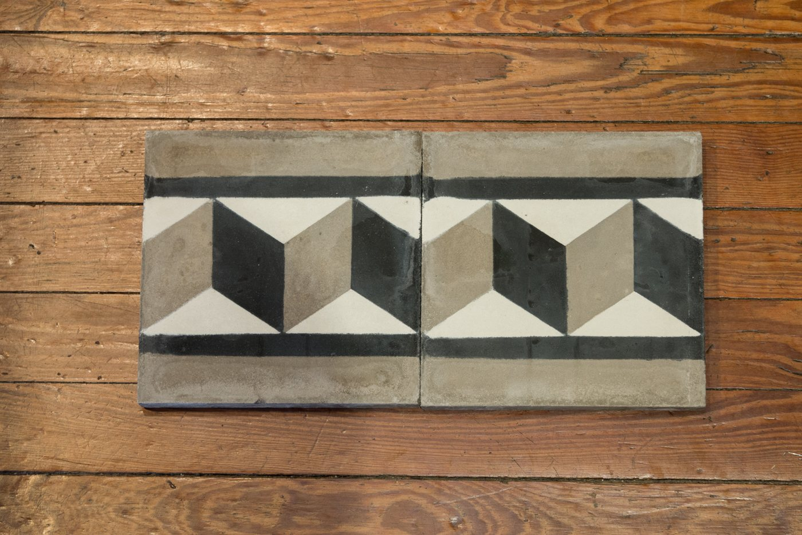
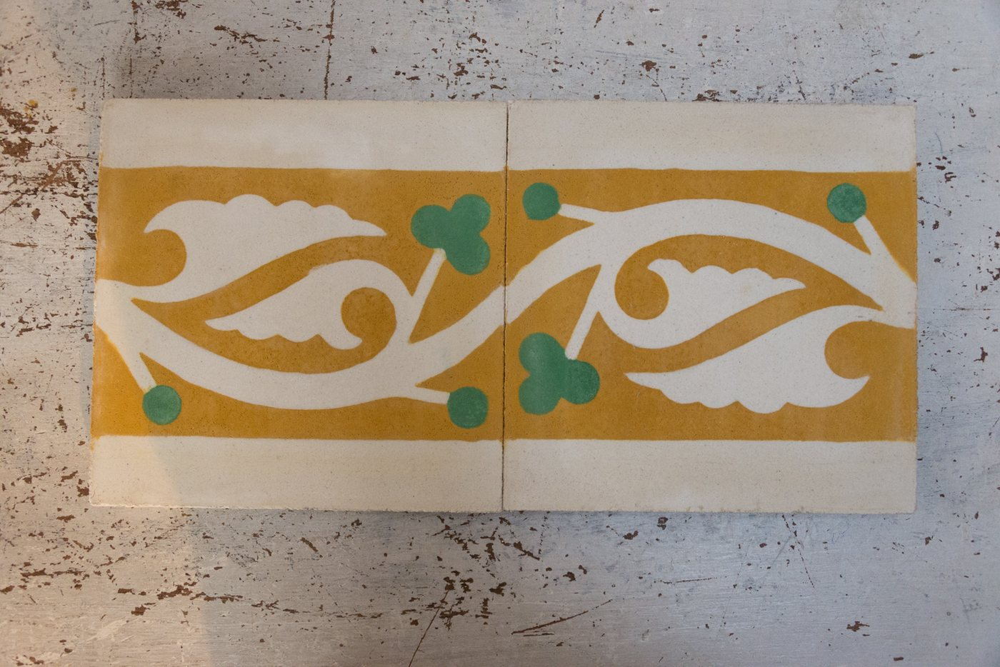
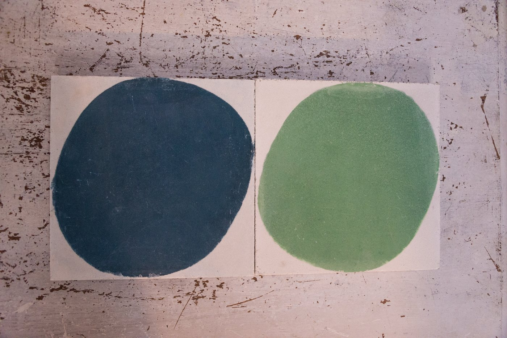
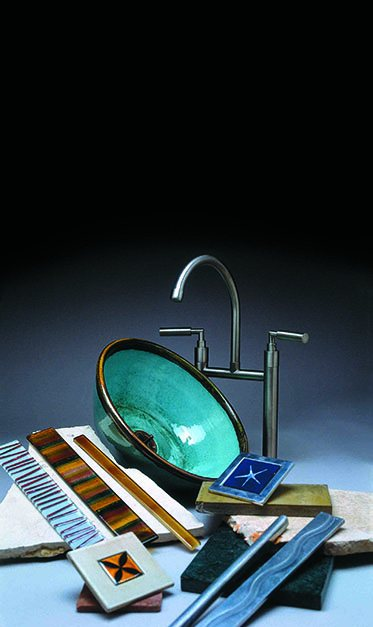
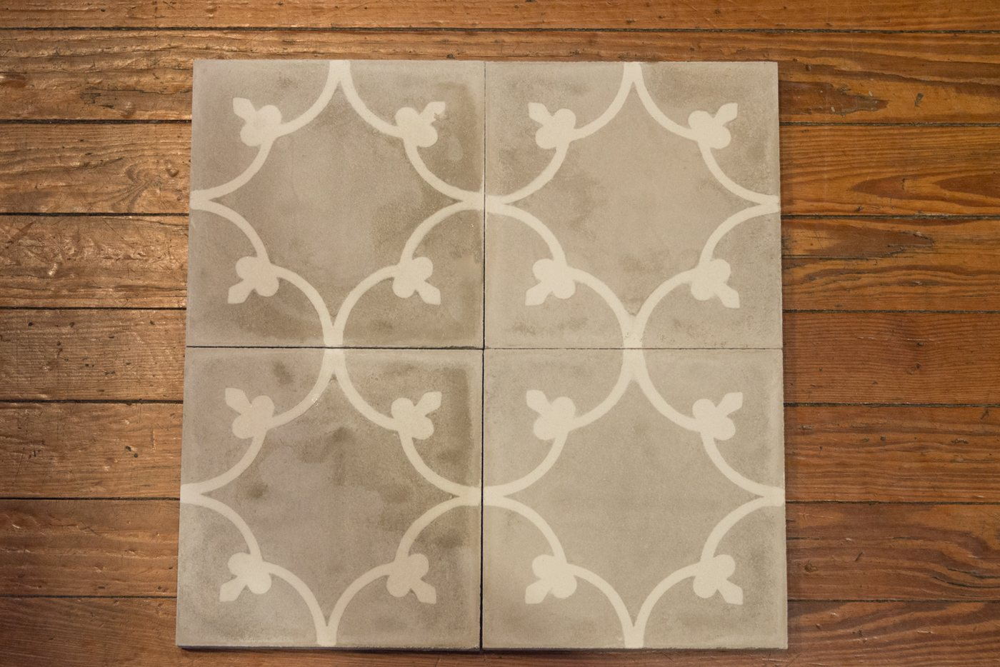

Colección · 04
Guardas
Cenefas pintadas a mano para enmarcar y definir cualquier ambiente.
El detalle que
define todo.
Una guarda bien elegida transforma un baño ordinario en un ambiente de autor. Pintadas a mano, diseñadas en conversación con cada cliente.





La cita
Cada cliente,
Cada cliente,
un proyecto único.
Cada proyecto nace de una conversación. En una cita conocemos tu espacio, tu estilo y tu manera de habitar el baño, para crear piezas hechas a mano, pensadas para tu casa y para nadie más.
Reservá tu cita